<mat-sidenav-container class="sidenav-container">
  <mat-sidenav #drawer class="sidenav" fixedInViewport="true" [attr.role]="isHandset ? 'dialog' : 'navigation'" [mode]="(isHandset | async)!.matches ? 'over' : 'side'"
    [opened]="!(isHandset | async)!.matches">
    <mat-toolbar color="primary"></mat-toolbar>
    <mat-nav-list>
      
      <a mat-list-item style="color:white;" [ngStyle]="{'background-color':flag4 == true ? 'lightgray' : '#274c7c' }" (click)="display4()">Verify
        Tasks</a>
      <a mat-list-item style="color:white;" [ngStyle]="{'background-color':flag1 == true ? 'lightgray' : '#274c7c' }" (click)="display()">View
        Performance</a>
      <a mat-list-item style="color:white;" [ngStyle]="{'background-color':flag3 == true ? 'lightgray' : '#274c7c' }" (click)="display3()">View
        Feedbacks</a>
      <a mat-list-item style="color:white;" [ngStyle]="{'background-color':flag2 == true ? 'lightgray' : '#274c7c' }" (click)="display2()">Upload
        Questions</a>
      <a mat-list-item style="color:white;" (click)="logout()">Logout</a>

    </mat-nav-list>
  </mat-sidenav>
  <mat-sidenav-content>
    <mat-toolbar class="toolbar">
      <button type="button" aria-label="Toggle sidenav" mat-icon-button (click)="drawer.toggle()" *ngIf="(isHandset | async)!.matches">
        <mat-icon aria-label="Side nav toggle icon">menu</mat-icon>
      </button>
      <span></span>

    </mat-toolbar>
    <!-- <router-outlet></router-outlet> -->
    <div *ngIf="flag1">
      <app-first-page></app-first-page>
    </div>
    <div *ngIf="flag2">
      <app-second-page></app-second-page>
    </div>
    <div *ngIf="flag3">
      <app-third-page></app-third-page>
    </div>
    <div *ngIf="flag4">
      <app-verify-tasks></app-verify-tasks>
    </div>
  </mat-sidenav-content>
</mat-sidenav-container>